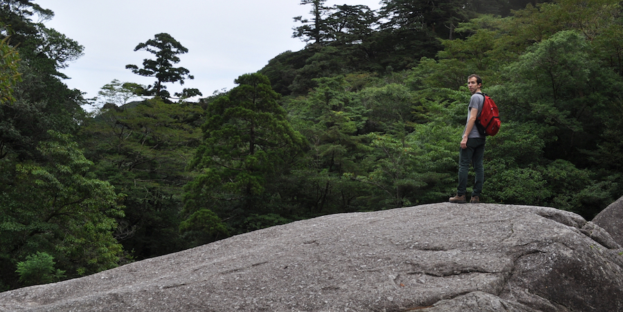

Profile: Kenny

It started quite abruptly. I never had much interest in traveling as a child. Los Angeles didn't appeal to me as any sort of permanent home, but in my mind the only other option was to move. The idea of jumping from place to place had never occurred to me. In my eyes I might leave Los Angeles and settle somewhere else, likely in the US, but that would be it. Perhaps this idea, of not merely traveling but moving, has had some deeper resonance in me now. For while I love a weekend away to someplace new, it failed to have the same impact or the same complete understanding as an extended time abroad. It wasn't enough to just visit a place, I needed to live out a taste of the everyday. I needed the supermarket and the home-life, working and exploring, getting a more complete feel for a life in that place.
I grew up just east of Los Angeles California, as part of it's endless sprawling suburb. The sameness or repetition between neighborhoods and cities coupled with the smog of my childhood stirred a hunger to flee. Still most of my youth I travelled around the US visiting friends and family, but rarely abroad. I had a chance to go to Toronto as a child, but to a young child it didn't seem particularly foreign. The great scale of the United States makes it quite easy to travel continuously and never need to step over the border. It wasn't until University that it even occurred for me that there really was a greater world to experience.
The first plunge into a new and unknown environment can be frightening, but for me it built a sort of strength. It gave me a new confidence that even in a completely different environment I would be fine, I would be more than fine. In this new environment I could be completely myself. The people I met all had different backgrounds and different views, and even the simplest thing might be done in a completely different way. Though this first trip traveling alone to Cork Ireland was only a short few months, it was long enough to give me a taste of the everyday life in new and different culture. My return to LA left me searching for the next opportunity to explore another new place, to live and travel abroad.
Since the awakening of this travel bug I have lived in England, China and Japan and visited a bakers dozen more. It inspires me to step out of my comfort zone, introduced me to my wife and given me a new appreciation for where I come from and where I can go. Together, my wife and I look for the next new experience in our travels and here in LA, where we presently reside. I hope to explore the world in the detail of a resident and explore California with the curiosity of a visitor.
--Kenny, 28 November 2016